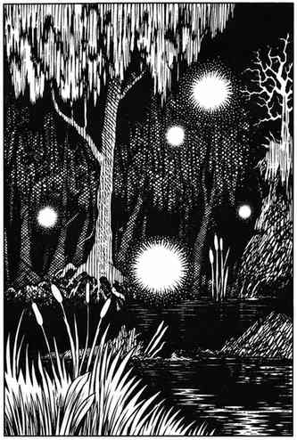

鬼火 · Will-o'-Wisp
 |
|
鬼火常在沼泽、泥潭、湿地或墓穴等危险荒废处出没，那里充满泥沼、流沙和陷坑。被这些危险困住、濒死的猎物会成为鬼火的食物，因为鬼火吞食逃逸的生命力。10% 的遭遇会有 1–3 只鬼火，此时附近 90% 概率有其巢穴。
鬼火能攻击并造成 2–16 点电击伤害，也能调节亮度迷惑猎物，缓慢移动或飘忽飞行。若不攻击，它可以完全熄灭光芒 2–8 个战斗轮；此时只有能看见隐形物体的生物才能发现它。任何武器都能伤害鬼火，但大多数法术无效；只有防护邪恶、魔法飞弹和迷宫术能影响它。若生命值降至 5 点或更低，鬼火会显露巢穴并交出财宝。鬼火看起来像提灯、火把或舞光术般的发光球体，战斗中呈蓝、紫或淡绿色。